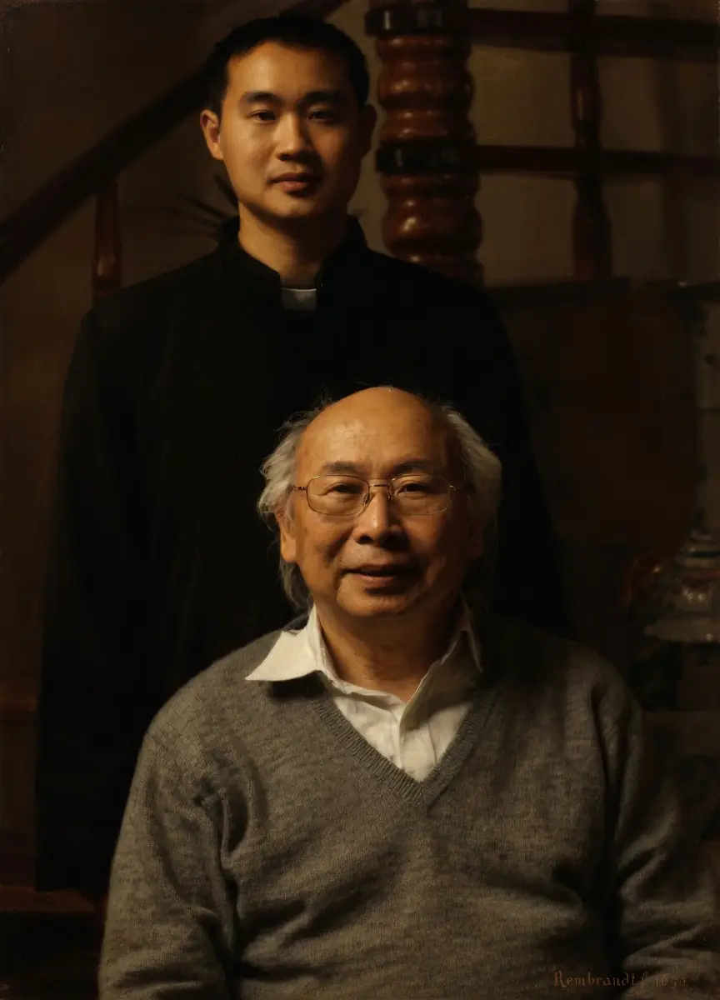

Lineage, experience, and direct teaching
Training at the academy is shaped by traditional Chinese martial arts lineage, passed through generations and taught through direct daily instruction.

Headmaster Qu Hai
Master Qu Hai teaches students directly on a daily basis. His approach focuses on precision, repetition, and long-term development rather than performance or short-term results.
Traditional lineage
The academy’s teaching is rooted in Taiji-Meihua (Plum Blossom) Praying Mantis, a structured northern Chinese martial art system known for its depth and technical detail.
Zhang Bing Dou
Zhang Bing Dou (张炳斗) is a 7th generation master of Taiji-Meihua Praying Mantis. Born in 1938 in Laiyang, Shandong, he began training at age six within his family lineage.
Training background
He studied under multiple renowned masters including Li Kun Shan, Wang Yu Shan, Sun Yu Jun, and Liu Jing Shan, developing a deep understanding of the system.
Contributions
He helped preserve and systemise the Mantis system, and developed forms such as the Mantis sword and Mantis staff.
Legacy
His students include Master Qu Hai and other international practitioners, helping extend the lineage beyond China.
Students train within a living martial arts lineage, guided by experienced teachers and structured traditional knowledge.